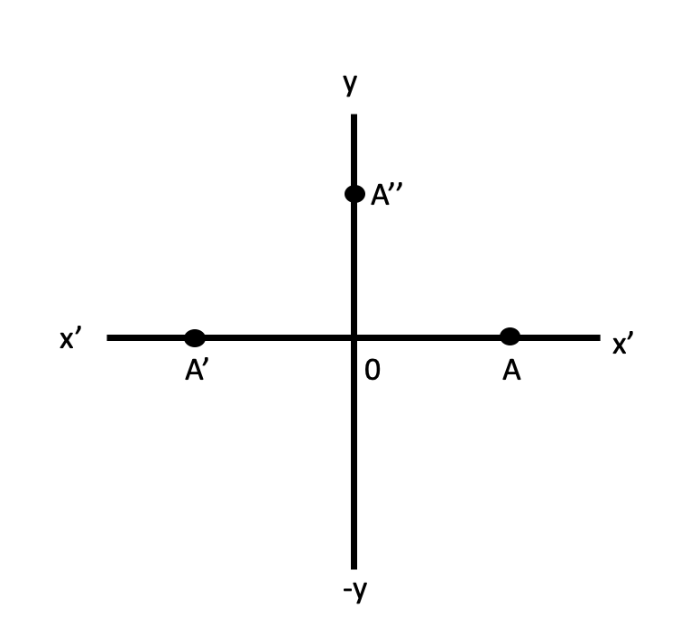

Chapter 1 Number Systems
Numbers can be classified according to how they are represented or according to the properties that they have.
1.1 Main types

1.1.1 Complex numbers
- Every number in number system is considered as a complex number
- A number of the form \(a+ib\) is called a complex number when \(a\) and \(b\) are real numbers and \(i=\sqrt{-1}\).
- For a given complex number, \(a+ib\), ‘\(a\)’ is known as the real part and ‘\(b\)’ is known as the imaginary part.
- If \(a=0\), the number \(ib\) is said to be purely imaginary, if \(b=0\) the number \(a\) is real.
- A pair of complex number \(a+ib\) and \(a-ib\) are said to be conjugate of each other.
Show that the sum and product of a complex number and its conjugate complex are both real.

- Let \(a+ib\) and \(c+id\) be two complex numbers. Then
Addition. \((a+ib) + (c+id)= (a+c)+i(b+d)\)
Subtraction \((a+ib) - (c+id)= (a-c)+i(b-d)\)
Multiplication \((a+ib) \times (c+id)= ac-bd+i(ad+bc)\)
Addition. \(\frac{a+ib}{c+id}= \frac{a+ib}{c+id}.\frac{c-id}{c-id}= \frac{ac+bd}{c^2+d^2}+i\frac{bc-ad}{c^2+d^2}\)
- Complex numbers are denoted by \(\mathbb{C}\).
1.1.2 Imaginary numbers
- A number that does not exist in the number line is known as imaginary number.
- For example, square root of negative numbers are imaginary numbers. It is denoted by \(i\). i.e \[\sqrt{-1}=i\] \[i^{2} = – 1\]
- So there is no real number \(i\) that satisfies the above equation.
- The quantity, \(i\) is called the unit imaginary number.
Geometrical Representation of imaginary numbers

- Let OA be positive numbers which is represented by \(x\) and \(OA^\prime\) by \(-x\).
- And \(-x= (i)^2x=i(ix)\) is on \(OX^{\prime}\).
- According to the above expression, the multiplication of the real number \(x\) by \(i\) twice amounts is equivalent to the rotation of OA through two right angles to reach \(OA^\prime\).
- Therefore, the multiplication of \(x\) by \(i\) is equivalent to the rotation of \(x\) through one right angle to reach \(OA^{\prime\prime}\).
- Therefore, y-axis is known as imaginary axis.
- Multiplication by \(i\) rotates its direction through right angle.
1.1.3 Real numbers
- All numbers that can be represented on the number line are known as real numbers.
- The real numbers is the set of numbers containing all of the rational numbers and all of the irrational numbers.
- Real Numbers are denoted by \(\mathbb{R}\).
1.1.4 Rational numbers
- Rational Numbers are denoted by \(\mathbb{Q}\)
- A rational number is defined as number of the form \(x/y\) where \(x\) and \(y\) are integers and \(y \neq 0\).
- The set of rational numbers encloses the set of integers and fractions.
The rational numbers that are not integral will have decimal values. These values can be of two types
- Terminating decimal fractions (finite decimal factors): For example \(1/5 = 0.5\) , \(13/5 = 2.6\).
- Non Terminating decimal fractions. The non terminating decimal fractions having two types:
- Non terminating periodic fractions
- Non terminating non periodic fractions
i) Non terminating periodic fractions
- These are non terminating decimal fractions of the type \(a.b1b2b3b4b5 .....bmb1b2b3b4b5 .....bm\)
Examples
\(19/6 = 3.16666666.....\)
\(18/7 = 2.57142857142857.......\)
\(21/9= 2.3333.......\)
ii) Non terminating non periodic fractions
- These are non terminating and there is no periodic decimal places for that number.
- i.e \(a.b1b2b3b4b5 .....bmc1c2.........\)
- for example 6.789542587436512……….
- So from above terminating and non terminating periodic fraction numbers belongs to rational numbers.
1.1.5 Irrational numbers
- Irrational numbers are denoted by \(\mathbb{I}\)
- Irrational numbers are consisted with non terminating and non periodic fractions.
- i.e irrational number is a number that cannot be written as a ratio \(x/y\) form (or fraction).
- In decimal form, it never ends or repeats.
- Examples for irrational numbers are \(\sqrt{2} = 1.414213......\), \(\pi = 3.14159265.......\), \(\sqrt{3}\), \(\sqrt{5}\) etc.
1.1.6 Integers
- All numbers that do not have the decimal places in them are called integers.
- \(\mathbb{Z} = \{...,-5,-4,-3,-2,-1,0,1,2,3,4,5,...\}\)
- i.e it may be positive or negative or zero.
- Integers are denoted by \(\mathbb{Z}\).
- Any integers are added, subtracted, or multiplied the result is always is an integer.
- When any integers multiplied , each of the multiplied integer is called a factor or divisor of the resulting product.
1.1.7 Whole numbers
- The set of whole numbers means narrator numbers and \(0\)
- Whole numbers = \(\mathbb{W} = \{ 0,1,2,3,4,5,6,7,8,...\}\)
1.1.8 Natural numbers
- The counting numbers start with 1 and their end is not defined.
- i.e \(\mathbb{N} =\{1,2,3,4,...\}\)
Reading :
Dass, H. K. (2008). ‘Complex Numbers’, Advanced Engineering Mathematics. S. Chand Publishing. pp. 474-520.
1.2 Number representations
1.2.1 Glossary of terms used in the positional numeral systems

There are various types of the number system in mathematics.
The four most common number system types are:
- Decimal number system (Base- 10)
- Binary number system (Base- 2)
- Octal number system (Base-8)
- Hexadecimal number system (Base- 16)
| System | Radix/ Base | Digits |
|---|---|---|
| Binary | 2 | 0 1 |
| Octal | 8 | 0 1 2 3 4 5 6 7 |
| Decimal | 10 | 0 1 2 3 4 5 6 7 8 9 |
| Hexadecimal | 16 | 0 1 2 3 4 5 6 7 8 9 A B C D E F |
1.2.2 Decimal Number System
The Decimal number system is a number of base or radix equal to 10.
To determine the actual number in each position, take the number that appears in the position and multiply it by \(10^x\), where \(x\) is the power representation.
Example 1: The value of the combination of symbols 453 is determined by adding the weights of each position as
\[4\times10^2+5\times10^1+3\times10^0\] \[= 4\times100 + 5\times10+3\times1\] Or \[= 400+50+3 = 453\]
Example 2: The value of the combination of symbols 369.54 is determined by adding the weights of each position as
\[3\times10^2+6\times10^1+9\times10^0+5\times10^{-1}+4\times10^{-2}\] Or \[= 300 + 60+9+\frac{5}{10}+\frac{4}{100}\] Or \[= 300 + 60+9+0.5+0.04= 369.54\]
1.2.3 Binary Number System
- The binary number system is a number system of base or radix equal to 2.
- In the binary number system, there are two symbols to represent number: 0 and 1
- When the symbols 0 an 1 are used to represent binary number, each symbol is called a binary digit or a bit.
- Therefore, the binary number 1011 is a four-digit number or a 4-bit binary number.
1.2.3.1 Binary-to-Decimal Conversion
- Multiply binary digit (1 or 0) in each position by the weight of the position and add the results.
Example 1: Convert the binary number 11010 to its decimal equivalent

Example 2: Convert the binary number 0.011 to its decimal equivalent

Example 3: Convert the binary number 110.011 to its decimal equivalent

1.2.3.2 Decimal-to-Binary Conversion
- To convert decimal numbers to their binary equivalent, the following procedures are employed:
1.2.3.2.1 Whole number conversion: Repeated division by 2
- The remainder resulting from each division forms binary number.
- The first remainder to be produced is called the least significant bit (LSB) and the last remainder is called most significant bit (MSB).
Example 1: Convert the decimal number 17 to binary

1.2.3.2.2 Fractional number conversion: Repeated multiplication by 2
- Multiply any factional part repeatedly by 2.
- The equivalent binary number is formed from the 1 or 0 in the units position (\(10^0\) position).
Example 1: Convert the decimal number 0.625 to binary

- Sometimes it will be necessary to terminate the multiplication when an acceptable degree of accuracy is obtained. Then the resulted binary number will be an approximation.
Example 2: Convert the decimal number 0.6375 to binary

- We see that it continues in this way and does not terminate.
- So, \(0.6375_{10} = (0.1010001101....)_{2}\).
If we discard all the bits after the 7th bit, then we get the approximate representation \(0.6375_{10} \approx (0.1010001)_{2},\) committing an error amounting to \[0.6375_{10} -(0.1010001)_{2}= 0.6375_{10} -0.6328125_{10}= (.0046875)_{10},\] which is known as round-off error.
Although, strictly, this is chopping-off error, it is generally, termed as round-off error.
Example 3: Convert the decimal number 49.683 to binary

1.2.4 Octal Number System
- The octal system is a number system of base or radix equal to 8.
1.2.4.1 Octal-to-Decimal Conversion
Example 1: Convert the following octal numbers to their decimal equivalent
- \(35_8\)
- \(100_8\)
- \(0.24_8\)

1.2.4.2 Decimal-to-Octal Conversion
- To convert decimal numbers to their octal equivalent, the following procedures are employed:
1.2.4.2.1 Whole number conversion: Repeated division by 8
Example 1: Convert the decimal number 245 to octal equivalent

1.2.4.2.2 Fractional number conversion: Repeated multiplication by 8
Example 2: Convert the decimal fraction 0.432 to octal equivalent

- This conversion to octal is not precise as there is a remainder.
- If greater accuracy is required, continue multiplying by 8 to obtain more octal digits.
Example 3: Convert the decimal number 419.95 to octal equivalent

1.2.4.3 Octal-to-Binary Conversion
Octal and binary number correspondence
| Octal | Binary |
|---|---|
| 0 | 000 |
| 1 | 001 |
| 2 | 010 |
| 3 | 011 |
| 4 | 100 |
| 5 | 101 |
| 6 | 110 |
| 7 | 111 |
- To convert from octal to binary, simply replace each octal digit with the corresponding three-digit binary number.
Example 1: Convert the following octal numbers to their binary equivalent
- \(247_8\)
- \(124.375_8\)

1.2.4.4 Binary-to-Octal Conversion
- To convert from binary to octal, subdivide the number into groups of three bits, proceeding both left and right from the binary point, and if necessary padding the last group with zero. The octal representation of each group gives the required octal number.
Example 1: Convert the binary number 11010101.01101 to its octal equivalent

1.2.5 Hexadecimal Number System
- The Hexadecimal system is a number system of base or radix equal to 16.
- Hexadecimal is similar to the octal numeral system because each can be easily compared to the binary numeral system.
- Example values of hexadecimal numbers converted into binary, octal and decimal.
| Hexadecimal | Binary | Octal | Decimal |
|---|---|---|---|
| 0 | 0000 | 0 | 0 |
| 1 | 0001 | 1 | 1 |
| 2 | 0010 | 2 | 2 |
| 3 | 0011 | 3 | 3 |
| 4 | 0100 | 4 | 4 |
| 5 | 0101 | 5 | 5 |
| 6 | 0110 | 6 | 6 |
| 7 | 0111 | 7 | 7 |
| 8 | 1000 | 10 | 8 |
| 9 | 1001 | 11 | 9 |
| A | 1010 | 12 | 10 |
| B | 1011 | 13 | 11 |
| C | 1100 | 14 | 12 |
| D | 1101 | 15 | 13 |
| E | 1110 | 16 | 14 |
| F | 1111 | 17 | 15 |
1.2.5.1 Hexadecimal-to-Decimal Conversion
Example 1: Convert the following octal numbers to their decimal equivalent
- \(C7_{16}\)
- \(2F_{16}\)

1.2.5.2 Decimal-to-Hexadecimal Conversion
- To convert decimal numbers to their hexadecimal equivalent, the following procedures are employed:
1.2.5.2.1 Whole number conversion: Repeated division by 16
Example 1: Convert the decimal number 245 to Hexadecimal equivalent

1.2.5.2.2 Fractional number conversion: Repeated multiplication by 16
Example 2: Convert the decimal fraction 0.0738 to Hexadecimal equivalent

Example 3: Convert the decimal number 420.0095 to Hexadecimal equivalent

1.2.5.3 Hexadecimal-to-Binary Conversion
- To convert from Hexadecimal to binary, simply replace each Hexadecimal digit with the corresponding four-digit binary number.
Example 1: Convert the following Hexadecimal numbers to their binary equivalent
- \(7B_{16}\)
- \(6D.8C_{16}\)

1.2.5.4 Binary-to-Hexadecimal Conversion
- To convert from binary to Hexadecimal, subdivide the number into groups of four bits. The hexadecimal representation of each group then gives the hexadecimal representation.
Example 1: Convert the binary number 11010101.01101 to its Hexadecimal equivalent

1.2.5.5 Octal-to-Hexadecimal Conversion
- First convert octal to binary, and then convert binary to hexadecimal.
Example 1: Convert the octal number 365.52 to its Hexadecimal equivalent

1.2.5.6 Hexadecimal-to-octal conversion
- First convert Hexadecimal to binary, and then convert binary to octal.
Example 1: Convert the octal number D2B.284 to its Hexadecimal equivalent

1.2.6 Binary Arithmetic
The arithmetic operations: addition, subtraction, multiplication and division of binary numbers follow the rules as summarized below
| Addition | Subtraction | Multiplication | Division |
|---|---|---|---|
| \(0+0 = 0\) | \(0-0=0\) | \(0\times0=0\) | \(\frac{0}{1} = 0\) |
| \(0+1 = 1\) | \(1-0=1\) | \(0\times1=0\) | \(\frac{1}{1} = 1\) |
| \(1+0 = 1\) | \(1-1 = 0\) | \(1\times0=0\) | \(\frac{0}{0} = undefined\) |
| \(1+1 = 10\) | \(1-0 = 10-1 =1\) | \(1\times1=1\) | \(\frac{1}{0} = undefined\) |
1.2.6.1 Binary Addition
Example 1: Add (a) 111 and 101 (b) 1010, 1001 and 1101

1.2.6.2 Binary Subtraction
Example 1: Perform the following subtractions
- \(11- 01\) (b) \(11-10\) (c) \(100-011\)
- When subtracting a larger number from a smaller number, the output will be negative.
- To perform this subtraction, subtract the smaller number from the larger number and prefix the output with the sign of the larger number.
Example 2: Perform the following subtraction 101 - 111

1.2.6.3 Binary multiplication
Example 1: Multiply the following binary numbers
- \(101\times11\) (b) \(1101\times10\) (c) \(1010\times101\)
- \(1011\times1010\)

- Multiplication of factional numbers is perform in the same manner as with decimal factional numbers.
Example 2: Perform the binary multiplication \(0.01\times11\)

1.2.6.4 Binary Division
Example 1: Perform the following binary division
- \(110\div11\) (b) \(1100\div11\) (c) \(1111\div110\) (d) \(1100\div101\)